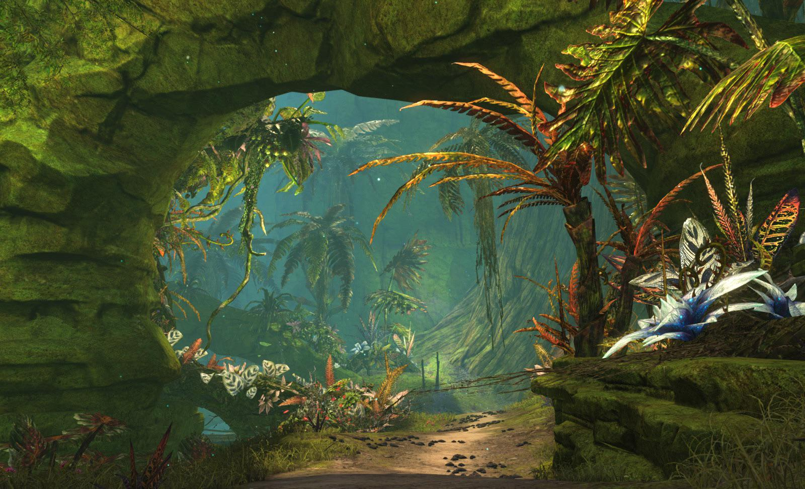

Você acaba de completar 10 anos e hoje é o dia de receber seu primeiro Pokémon do Professor Oak. Sua cidade natal, Pallet, está em festa. Ao chegar ao laboratório, você tem duas opções de Pokémon para começar sua jornada: Bulbasaur, o Pokémon tipo Grama, e Charmander, o Pokémon tipo Fogo. Qual você escolhe?